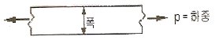
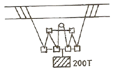
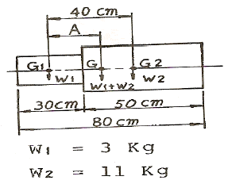
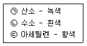

타워크레인운전기능사 (2009-07-12 기출문제)
1과목: 타워크레인 구조 및 기능일반
1. 건설현장에서 사용하고 있는 타워크레인의 주요 구조부가 아닌 것은?
- 브레이크
- 훅 등의 달기기구
- 전선류
- 윈치, 균형추
(정답률: 74%)

2. 전압의 종류에서 특별 고압은 최소 몇 V를 초과하는 것을 말하는가?
- 600V 초과
- 750V 초과
- 7000V 초과
- 20000V 초과
(정답률: 76%)
3. 다음 중 과전류 차단기에 요구되는 성능에 해당되지 않는 것은?
- 전동기의 시동전류와 같이 단시간동안, 약간의 과전류에서도 동작할 것
- 과전류가 장시간 계속 흘렀을 때 동작할 것
- 과전류가 커졌을 때 단시간에 동작할 것
- 큰 단락 전류가 흘렀을 때는 순간적으로 동작 할 것
(정답률: 63%)
4. 배선용 차단기의 기본 구조에 해당되지 않는 것은?
- 개폐기
- 과전류 트립장치
- 단자
- 퓨즈
(정답률: 71%)
5. 기초 앵커를 설치하는 방법 중 옳지 않은 것은?
- 지내력은 접지압 이상 확보한다.
- 버림 콘크리트 타설 또는 지반을 다짐한다.
- 구조 계산 후 충분한 수의 파일을 항타한다.
- 앵커 셋팅 수평도는 ±5mm로 한다.
(정답률: 82%)
6. 마스트의 단면적이 300mm2 이상의 접지공사에 대한 설명 중 틀린 것은?
- 지상 높이 20m이상은 피뢰 접지를 하도록 한다.
- 접지저항은 10Ω 이하를 유지하도록 한다.
- 접지판 연결 알루미늄선 굵기는 30mm2 이상으로 한다.
- 피뢰도선과 접지극은 용접방법으로 고정하도록 한다.
(정답률: 55%)
7. T형(수평지브형) 타워크레인의 방호장치에 해당되지 않는 것은?
- 권과 방지장치
- 과부하 방지장치
- 비상 정지장치
- 붐 전도방지장치
(정답률: 83%)
8. 유압 탱크에서 오일을 흡입하여 유압밸브로 이송하는 기기는?
- 액추에이터
- 유압펌프
- 유압 밸브
- 오일 쿨러
(정답률: 79%)
9. 기복(Jib-Luffing)장치를 설명하였다. 틀린 것은?
- 최고·최저각을 제한하는 구조로 되어 있다.
- 타워크레인의 높이를 조절하는 기계장치이다.
- 지브의 기복각으로 작업반경을 조절한다.
- 최고 경계각을 차단하는 기계적 제한장치가 있다.
(정답률: 74%)
10. 모멘트 M = PxL일 때 P와 L의 설명으로 맞는 것은?
- P : 힘, L : 길이
- P : 길이, L : 면적
- P : 무게, L : 체적
- P : 부피, L : 길이
(정답률: 80%)
11. L형(경사지브형) 타워크레인의 운동 중 기복을 바르게 설명한 것은?
- 수직축을 중심으로 회전운동을 하는 것을 말한다.
- 거더의 레일을 따라 트롤리가 이동하는 것이다.
- 크레인의 지브가 수직면에서 지브각의 변화를 말한다.
- 달아올릴 화물을 타워크레인의 마스트쪽으로 당기거나 밀어내는 것이다.
(정답률: 77%)
12. 주행식 타워크레인의 트랙에 관한 설명이다. 해당 되지 않는 것은?
- 트랙에 접지가 되었는지 확인한다.
- 레일트랙이 설치기준에 맞게 설치되었는지 점검한다.
- 크레인을 기도하기 전에 레일트랙에 장애물을 점검한다.
- 크레인의 회전 및 주행 모멘트는 역전류를 사용하여 정지시킨다.
(정답률: 79%)
13. 타워크레인의 지브가 바람에 의해 영향을 받는 면적을 최소로 하여 타워크레인의 본체를 보호 하는 방호장치는?
- 충돌방지장치
- 와이어로프 이탈방지장치
- 선회브레이크 풀림장치
- 트롤리정지장치
(정답률: 79%)
14. 옥외 타워크레인에서 반드시 항공등을 설치해야하는 타워크레인의 최소높이는?
- 30m 이상
- 40m 이상
- 50m 이상
- 60m 이상
(정답률: 68%)
15. 다음 중 타워크레인으로 작업 시 중량물의 흔들림(회전)방지 조치가 아닌 것은?
- 길이가 긴 것이나 대형 중량물은 이동 중 회전하여 다른 물건과 접촉할 우려가 있는 경우 반드시 가이 로프로 유도한다.
- 작업장소 및 매단 중량물에 따라서는 여러개의 가이 로프로 유도할 수 있다.
- 크레인의 선회동작 및 트롤리 이동시 가이로프가 다른 장애물에 걸릴 우려가 있기 때문에 이때는 가이 로프를 하지 않는 것이 좋다.
- 중량물을 유도하는 가이 로프는 주로 섬유벨트를 이용하는 것이 좋다.
(정답률: 52%)
16. 타워크레인의 마스트 연장 작업시 유압장치의 점검 및 준비에 관한 사항 중 잘못된 것은? (단, 유압실린더가 한 개인 경우)
- 유압장치의 압력을 점검 및 확인한다.
- 유압유니트 및 유압실런더의 작동 상태를 점검한다.
- 텔레스코핑 케이지의 유압실린더와 메인지브가 같은 방향인지 확인한다.
- 유압펌프를 무부하 2~3회 작동하여 공기배출 및 무부하 압력을 점검한다.
(정답률: 57%)
17. 강재가 그림과 같이 좌·우 방향으로 하중을 받으면 그 폭은 어떻게 변화 되려고 하는가?

- 변화없음
- 감소함
- 증가함
- 감소 후 증가함
(정답률: 77%)
18. 힘의 3요소가 아닌 것은?
- 작용점
- 방향
- 크기
- 속도
(정답률: 60%)
19. 타워크레인의 트롤리에 관련된 안전장치가 아닌 것은?
- 트롤리 로프 파단시 트롤리를 멈추게 하는 안전장치
- 트롤리 내, 외측 제한장치(리미트 스위치)
- 트롤 리가 최소 또는 최대반경위치로 주행시 충격흡수 및 정지장치
- 트롤리 로프 꼬임 방지장치
(정답률: 65%)
20. 타워크레인 각 지브 길이에 따라 정격하중의 1.⑤배 이상 권상시 작동하는 방호장치는?
- 권상, 권하 방지 장치
- 과부하 방지 장치
- 트롤리 로프 안전 장치
- 훅 해지 장치
(정답률: 64%)
2과목: 양중작업 일반
21. 크레인 줄걸이 작업용 보조용구의 기능에 해당되는 것은?
- 한 줄에 걸리는 장력을 높인다.
- 줄걸이 용구와 인양물을 보호한다.
- 줄걸이 각도를 낮추어 준다.
- 로프의 늘어짐 현상을 줄인다.
(정답률: 63%)
22. 트롤리 이동 내·외측 제어장치의 제어위치로 맞는 것은?
- 지브 섹션의 중간
- 지브 섹션의 시작과 끝 지점
- 카운터 지브 끝 지점
- 트롤리 정지 장치
(정답률: 73%)
23. 타워크레인 지브가 절손되는 원인 설명으로 가장 관계가 먼 것은?
- 인접 시설물과의 충돌
- 트롤리의 이동
- 정격하중 이상의 과부하
- 지브와 달기기구와의 충돌
(정답률: 76%)
24. 타워크레인의 작업신호 중 무선통신에 관한 설명으로 틀린 것은?
- 조용한 지역에서 활용된다.
- 무선통신이 만족하지 못하면 수신호로 한다.
- 통신 및 육성은 간결, 단순, 명확해야 한다.
- 수신호와 꼭 함께 무선통신을 하도록 한다.
(정답률: 68%)
25. 타워크레인 신호수가「팔을 아래로 뻗고 집게 손가락을 아래로 향해서 원을 그렸다」 어떤 신호를 의미 하는가?
- 훅을 위로 올린다.
- 훅을 아래로 내린다.
- 훅을 그 자리에 유지시킨다.
- 훅을 천천히 올리고 내린다.
(정답률: 80%)
26. 타워크레인 운전 중 위험상황이 발생한 상태에서 생소한 사람이 정지신호를 보내 왔다면 운전자는 어떻게 하는 것이 가장 좋은가?
- 운전자가 주위를 확인하고 정지한다.
- 무조건 정지시키고 난 후 확인한다.
- 신호수가 아니므로 무시하고 운전한다.
- 정해진 신호수가 정지신호를 보낼 때까지 그대로 작업한다.
(정답률: 72%)
27. 옥외에 설치된 주행 크레인은 미끄럼방지·고정장치가 설치된 위치까지 매초 ( )의 풍속을 가진 바람이 불 때에도 주행할 수 있는 출력을 가진 원동기를 설치한 것이어야 한다. ( )에 알맞은 것은?
- 12m
- 14m
- 16m
- 18m
(정답률: 56%)
28. 타워크레인으로 양중작업을 할 수 있는 것은?
- 어떤 물체를 파괴할 목적으로 하는 작업
- 벽체에서 완전히 분리된 갱폼을 인양하는 작업
- 하중을 땅에서 끌어당기는 작업
- 땅 속에 박힌 하중을 인양하는 작업
(정답률: 76%)
29. 타워크레인의 운전자가 안전 운전을 위해 준수할 사항이 아닌 것은?
- 타워크레인 구동부분의 윤활이 정상인가 확인한다.
- 타워크레인의 해체 일정을 확인한다.
- 브레이크의 작동상태가 정상인가 확인한다.
- 타워크레인의 각종 안전장치의 이상 유무를 확인한다.
(정답률: 83%)
30. 타워크레인의 훅을 상승할 때 줄걸이용 와이어로프에 장력이 걸리면 일단 정지하고 확인할 사항이 아닌 것은?
- 줄걸이용 와이어로프에 걸리는 장력이 균등 한가를 확인
- 화물이 붕괴될 우려는 없는가 확인
- 보호대가 벗겨질 우려는 없는가 확인
- 권과방지 장치는 정상 작동하는지 확인
(정답률: 69%)
31. 줄걸이용 와이어로프를 엮어 넣기로 고리를 만들려고 한다. 이때 엮어 넣는 적정 길이(Splice)는?
- 와이어로프 지름의 5~10배
- 와이어로프 지름의 10~20배
- 와이어로프 지름의 20~30배
- 와이어로프 지름의 30~40배
(정답률: 55%)
32. 크레인에서 그림과 같이 부하물(200t)을 들어 올리려 할 때 당기는 힘은? (단, 마찰저항이나 매다는 기구 자체의 무게는 없는 것으로 가정한다)

- 25 t
- 28.57 t
- 40 t
- 100 t
(정답률: 50%)
33. 와이어로프의 구조 중 소선을 꼬아 합친 것을 무엇이라고 하는가?
- 심강
- 스트랜드
- 소선
- 공심
(정답률: 79%)
34. 와이어로프의 단말 가공 중 가장 효율적인 것은?
- 심블(Thimble)
- 소켓(Socket)
- 웨지(Wedge)
- 클립(Clip)
(정답률: 45%)
35. 권상용 체인으로 적합한 것은 링크 단면의 지름 감소가 당해 체인의 제조시보다 몇 % 이하 이어야 하는가?
- 5
- 10
- 15
- 20
(정답률: 59%)
36. 같은 굵기의 와이어로프 일지라도 소선이 가늘고 수가 많은 것에 대한 설명 중 맞는 것은?
- 유연성이 좋으나 더 약하다.
- 유연성이 좋고 더 강하다.
- 유연성이 나쁘고 더 약하다.
- 유연성은 나빠도 더 강하다.
(정답률: 74%)
37. 줄걸이 작업시 짐을 매달아 올릴 때 주의사항으로 맞지 않는 것은?
- 매다는 각도는 60° 이내로 한다.
- 짐을 전도시킬 때는 가급적 주위를 넓게 하여 실시한다.
- 큰 짐 위에 작은 짐을 얹어서 짐이 떨어지지 않도록 한다.
- 전도 작업 도중 중심이 달라질 때는 와이어 로프 등이 미끄러지지 않도록 한다.
(정답률: 65%)
38. 와이어 손상의 분류에 대한 설명으로 틀린 것은?
- 와이어는 사용 중 시브 및 드럼 등의 접촉에 의해 마모가 생기는데 이때 직경 감소가 7% 마모 시 교환한다.
- 사용 중 소선의 단선이 전체 소선수의 50%가 단선이 되면 교환한다.
- 과하중을 들어올릴 경우 내·외층의 소선이 맞부딪치게 되어 피로현상을 일으키게 된다.
- 열의 영향으로 강도가 저하되는데 이때 심강이 철심일 경우 300℃까지 사용이 가능하다.
(정답률: 65%)
39. 다음 그림은 축의 무게중심 G를 나타내고 있다. A의 거리는?

- 약 20 cm
- 약 38 cm
- 약 31 cm
- 약 25 cm
(정답률: 58%)
40. 오른손으로 왼손을 감싸고 2~3회 흔드는 신호 방법은?
- 천천히 이동
- 기다려라
- 신호불명
- 기중기 이상발생
(정답률: 50%)
3과목: 타워크레인 설치.해체 일반
41. 현장에 설치된 타워크레인이 두 대 이상으로 중첩되는 경우의 최소 안전 이격거리는 얼마인가?
- 1m
- 2m
- 3m
- 4m
(정답률: 62%)
42. 타워크레인의 고장력 볼트 조임 방법과 관리요령이 아닌 것은?
- 마스트 조임시 토크렌치를 사용한다.
- 나사선과 너트에 그리스를 적당량 발라준다.
- 볼트, 너트의 느슨함을 방지하기 위해 정기 점검을 한다.
- 너트가 회전하지 않을 때까지 토크렌치로 토크 값 이상으로 조인다.
(정답률: 78%)
43. 타워크레인 해체 시 이동식 크레인 선정조건이 아닌 것은?
- 이동식 크레인 운전자 확인
- 최대 권상높이
- 가장 무거운 부재 중량
- 이동식 크레인의 선회 반경
(정답률: 75%)
44. 타워크레인 해체작업 시 가장 선행되어야 할 사항은?
- 마스트와 볼 선회 링써포트 연결 볼트를 푼다.
- 마스트와 마스트 체결 볼트를 푼다.
- 카운터 지브의 해체 및 정리한다.
- 메인 지브와 카운터 지브의 평행을 유지한다.
(정답률: 74%)
45. 마스트 상승 및 해체작업을 할 때 특히 주의해야 할 사항에 해당 되는 것은?
- 크레인의 균형을 유지한다.
- 콘트롤러의 성능을 확보한다.
- 볼트의 상태를 점검한다.
- 관련 작업자와 자주 통화한다.
(정답률: 70%)
46. 다음 중 마스트 연장작업(텔레스코핑)시 반드시 준수해야 할 사항이 아닌 것은?
- 반드시 제조자 및 설치 업체에서 작성한 표준 작업 절차에 의해 작업해야 한다.
- 텔레스코핑 작업 시 타워크레인 양쪽 지브의 균형 유지는 반드시 준수해야 한다.
- 텔레스코핑 작업 시 유압실린더 위치는 카운터 지브의 반대방향 이어야 한다.
- 텔레스코핑 작업은 반드시 제한 풍속(순간 최대풍속 : 10m/s)을 준수해야 한다.
(정답률: 72%)
47. 타워크레인의 클라이밍 작업 시 사전에 검토를 실시하는데 반드시 포함하여야 할 사항이 아닌 것은?
- 클라이밍 타워크레인의 설계개요 검토
- 클라이밍 타워크레인 가설지지 프레임의 구성 검토
- 카운터 지브의 밸러스트 중량 가, 감 여부
- 클라이밍 부재 및 접합부의 검토
(정답률: 51%)
48. 유해·위험작업의 취업제한에 관한 규칙에 의하여, 타워크레인 조종업무의 적용대상에서 제외되는 타워크레인은?
- 조종석이 설치된 정격하중 1톤인 타워크레인
- 조종석이 설치된 정격하중 2톤인 타워크레인
- 조종석이 설치된 정격하중 3톤인 타워크레인
- 조종석이 설치되지 아니한 정격하중 3톤인 타워크레인
(정답률: 82%)
49. 타워크레인의 해체에 필요한 필수적인 요소로 설치시부터 숙지해야 할 내용을 설명하였다. 틀린것은?
- 지지·고정시의 균형
- 상승시의 균형
- 주위 장애물의 간섭
- 전원의 공급위치
(정답률: 63%)
50. 타워크레인 최초 설치시 반드시 검토해야 할 사항이 아닌 것은?
- 타워의 설치 방향
- 기초 앵커의 레벨
- 양중 크레인의 위치
- 갱폼의 인양거리
(정답률: 65%)
51. 작업 중 화재발생의 점화 원인이 될 수 있는 것과 가장 거리가 먼 것은?
- 과부하로 인한 전기장치의 과열
- 부주의로 인한 담배불
- 전기배선 합선
- 연료유의 자연발화
(정답률: 70%)
52. 다음 보기에서 가스용접기에 사용되는 용기의 도색이 옳게 연결된 것을 모두 고른 것은?

- ㉠, ㉡
- ㉡, ㉢
- ㉠, ㉢
- ㉠, ㉡, ㉢
(정답률: 63%)
53. 방화 대책의 구비사항으로 가장 거리가 먼 것은?
- 소화기구
- 스위치 표시
- 방화벽 및 스프링쿨러
- 방화사
(정답률: 75%)
54. 안전·보건표지의 종류와 형태에서 그림의 표지로 맞는 것은?
- 안전복 착용
- 안전모 착용
- 보안면 착용
- 출입금지
(정답률: 80%)
55. 벨트에 대한 안전사항으로 틀린 것은?
- 벨트를 걸 때나 벗길 때에는 기계를 정지한 상태에서 실시한다.
- 벨트의 이음쇠는 돌기가 없는 구조로 한다.
- 벨트가 풀리에 감겨 돌아가는 부분은 커버나 덮개를 설치한다.
- 바닥면으로부터 2m 이내에 있는 벨트는 덮개를 제거한다.
(정답률: 83%)
56. 가스누설 검사에 가장 좋고 안전한 것은?
- 아세톤
- 성냥불
- 순수한 물
- 비눗물
(정답률: 86%)
57. 다음 중 작업표준의 목적에 해당 하는 것은?
- 위험요인의 제거
- 경영자의 이해
- 작업방식의 검토
- 설비의 적정화 및 정리정돈
(정답률: 57%)
58. 수공구 사용시 유의사항으로 맞지 않는 것은?
- 토크렌치는 볼트를 풀 때 사용한다.
- 무리한 공구 취급을 금한다.
- 공구를 사용하고 나면 일정한 장소에 관리 보관한다.
- 수공구는 사용법을 숙지하여 사용한다.
(정답률: 82%)
59. 폭풍이 불어 올 우려가 있을 때에는 옥외에 있는 주행 크레인에 대하여 이탈을 방지하기 위한 조치를 하여야 한다. 폭풍이란 순간 풍속이 매초 당 몇 미터를 초과하는 바람인가?
- 10
- 20
- 30
- 40
(정답률: 59%)
60. 수공구 사용에서 드라이버 사용방법으로 틀린 것은?
- 날 끝이 홈의 폭과 길이에 맞는 것을 사용한다.
- 날 끝이 수평이어야 한다.
- 전기 작업시에는 절연된 자루를 사용한다.
- 단단하게 고정된 작은 공작물은 가능한 손으로 잡고 작업한다.
(정답률: 69%)